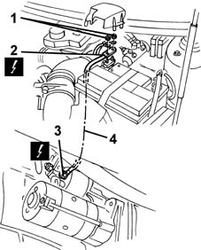
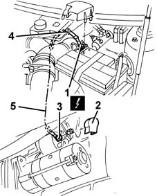

5530B26 lead between battery and starter motor - r+r
- Path
- Procedures > 55 ELECTRICAL EQUIPMENT > 5530 CURRENT GENERATOR > 5530B battery and leads > 5530B26 lead between battery and starter motor - r+r
- Kind
- repair procedure (removal / refitting; the operation number is the code)
- Applies to
- all engines; all production periods
- Interactive page
- https://sloeber94.github.io/elrnDB-fMltpl/en/#/2891913
Applies to: engines: 1.6 16v; all production periods
 Removing
Removing
 Refitting
Refitting1. Disconnect the electrical connections from the positive battery terminal.
2. Disconnect the electrical connection for the cable.
 | Name | Connector |
|---|---|---|
2 | Battery |
3. Disconnect the electrical connections from the starter motor.
| Name | Connector |
|---|---|---|
3 | Starter motor |
4. Recover the cable between the battery and the starter motor.

Applies to: engines: 1.6 16v; all production periods
Refitting
RemovingCheck that the cable between the battery and the starter motor is not damaged.
Reposition the cable.
Connect the electrical connection for the cable to the starter motor.
Connect the electrical connection for the cable to the positive battery terminal.
Connect the electrical connections to the battery terminal.
Applies to: engines: 1.9 JTD 8V; all production periods
Removing
Refitting1016A10 sound-proofing cover - r + r
1048A10 AIR CLEANER FILTERING ELEMENT - REPLACE
1. Disconnect the electrical connection for the cable from the positive battery terminal.
| Name | Connector |
|---|---|---|
1 | Battery |
2. Remove the protective cover.
3. Disconnect the electrical connection for the cable from the starter motor.
| Name | Connector |
|---|---|---|
3 | Battery |
4. Disconnect the retaining bands.
5. Recover the cable between the battery and the starter motor.

Applies to: engines: 1.9 JTD 8V; all production periods
Refitting
RemovingCheck that the cable between the battery and the starter motor is not damaged.
Reposition the cable.
Connect the electrical connection for the cable to the starter motor.
Connect the electrical connection for the cable to the positive battery terminal.
Connect the cable retaining bands.
Topics linked from this page (6)
- 1016A10 sound-proofing cover - r + r
- 1048A10 AIR CLEANER FILTERING ELEMENT - REPLACE
- 5530B10 battery - r+r
- A001A Battery ( BATTERY POSITIVE )
- A001B Battery ( BATTERY NEGATIVE )
- A020A Starter motor ( BATTERY POSITIVE )